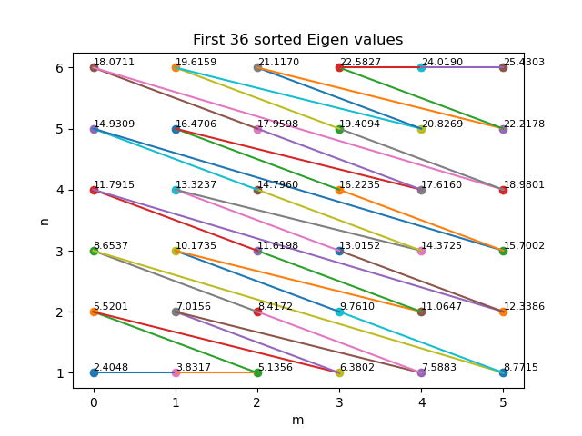
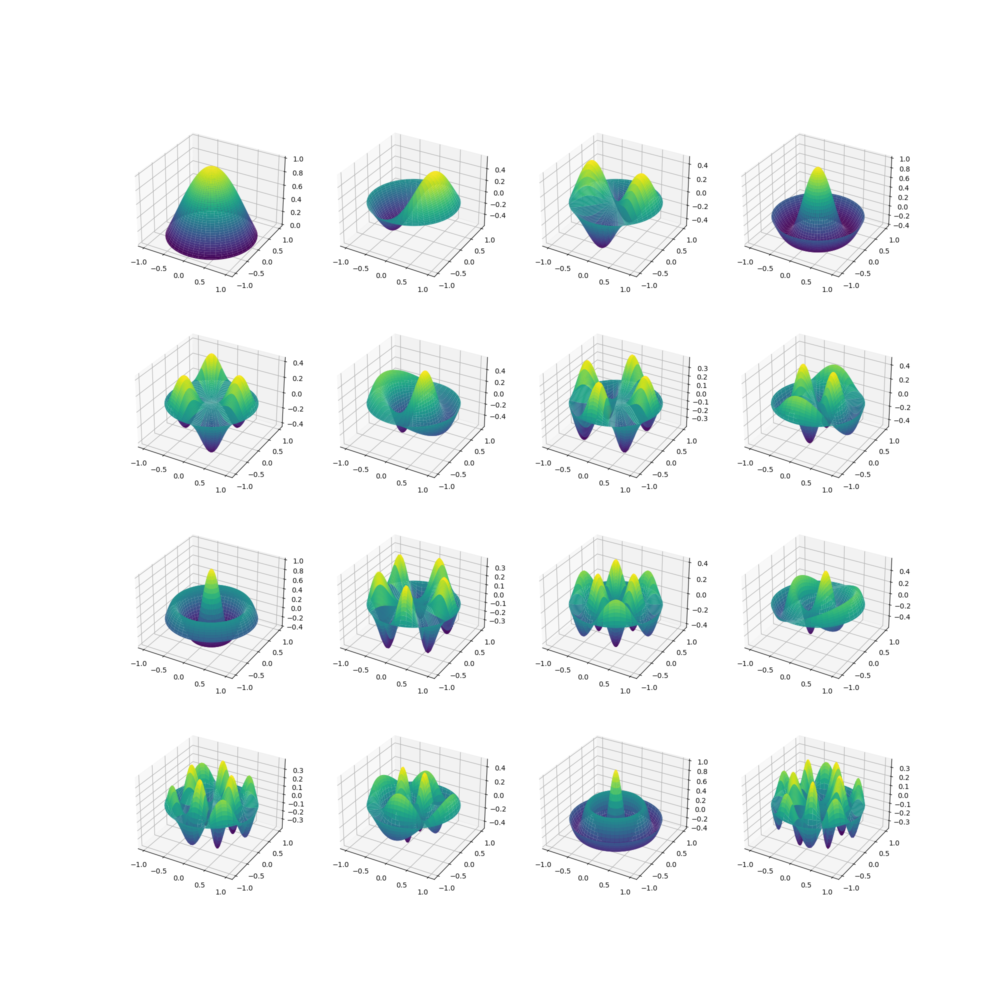
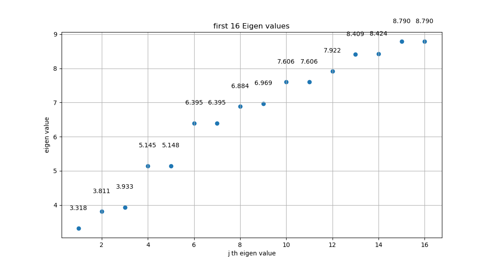
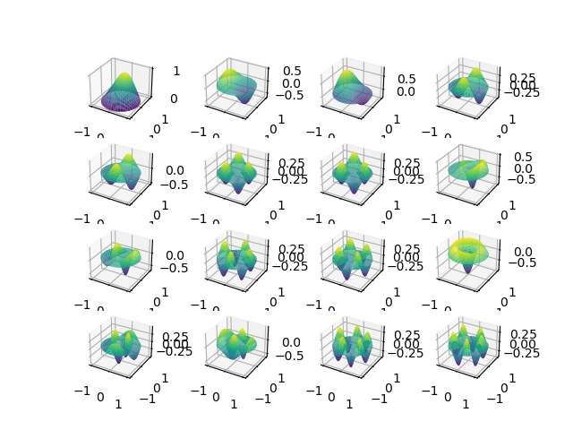
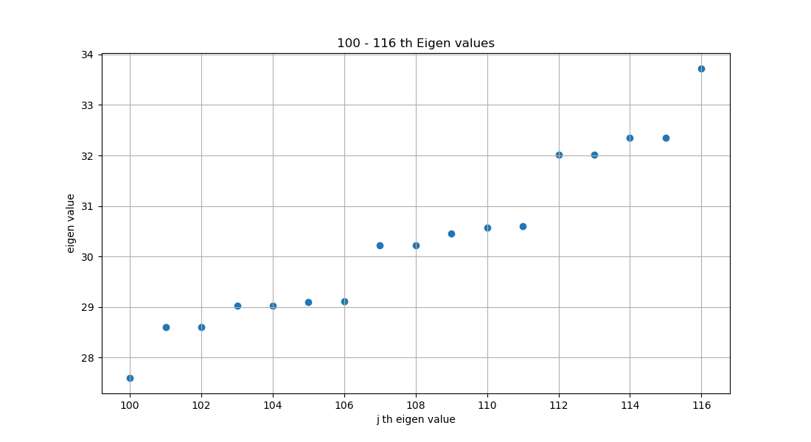
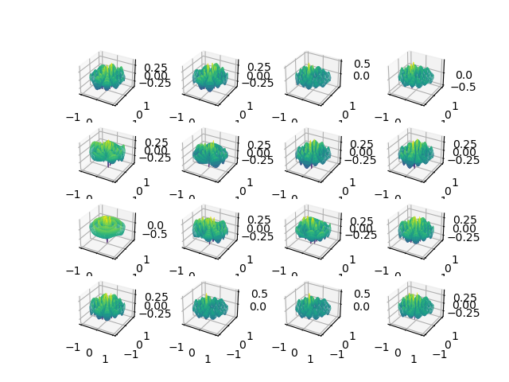
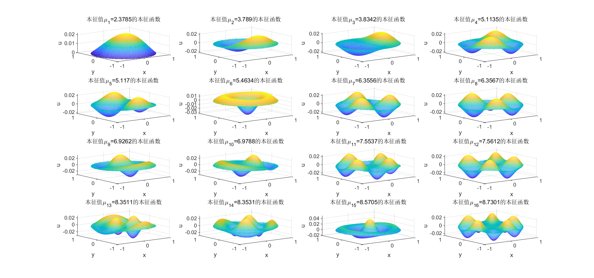
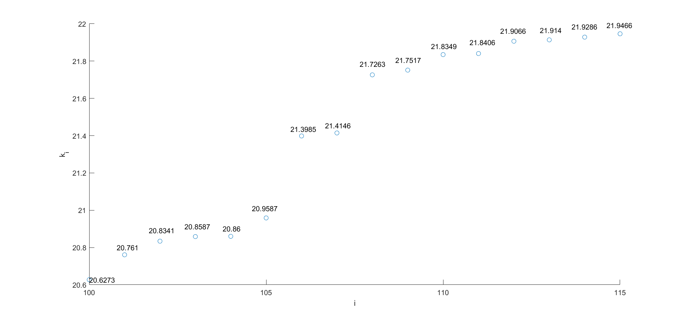
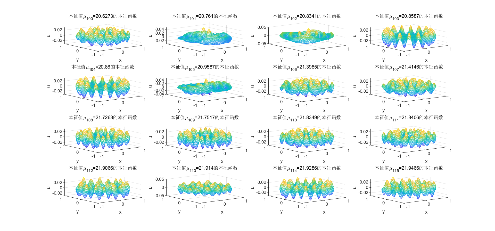
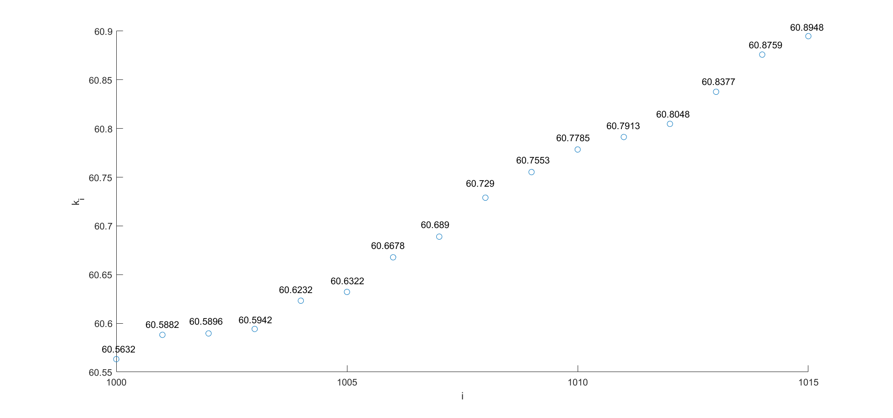

小课题2
问题描述
二维单位圆鼓膜偏离平衡位置的位移 u ( r , θ ) u(r,\theta) u ( r , θ )
T ρ ∇ 2 u + μ 2 u = 0 \frac{T}{\rho}\nabla^2 u+\mu^2 u
=0 ρ T ∇ 2 u + μ 2 u = 0
当 T = T 0 = 1 , ρ = ρ 0 + ρ 1 , ρ 0 = 1 , ρ 1 = 0 T=T_0=1,\rho=\rho_0+\rho_1,\rho_0=1,\rho_1=0 T = T 0 = 1 , ρ = ρ 0 + ρ 1 , ρ 0 = 1 , ρ 1 = 0 u ∣ ∂ D = 0 u\big|_{\partial D}=0 u ∂ D = 0
∇ 2 u + μ 2 u = 0 \nabla^2 u+\mu^2 u
=0 ∇ 2 u + μ 2 u = 0
方程的本征解为：
{ φ j ( r , θ ) = J m ( x n ( m ) r ) cos ( m θ ) , μ j = x n ( m ) , j = 1 , 2 , ⋯ , m = 0 , 1 , 2 , ⋯ , n = 1 , 2 , ⋯ } \bigg\{\varphi_j(r,\theta)=\mathrm{J}_m(x^{(m)}_n r)\cos (m\theta),~~\mu_j=x^{(m)}_n,~~j=1,2,\cdots,~~m=0,1,2,\cdots,~~n=1,2,\cdots \bigg\} { φ j ( r , θ ) = J m ( x n ( m ) r ) cos ( m θ ) , μ j = x n ( m ) , j = 1 , 2 , ⋯ , m = 0 , 1 , 2 , ⋯ , n = 1 , 2 , ⋯ }
其中，j j j μ 1 < μ 2 < ⋯ < μ j < ⋯ \mu_1<\mu_2<\cdots<\mu_j<\cdots μ 1 < μ 2 < ⋯ < μ j < ⋯
当 T = T 0 = 1 , ρ = ρ 0 + ρ 1 , ρ 0 = 1 , ρ 1 = 0.2 φ 2 ( r , θ ) T=T_0=1,\rho=\rho_0+\rho_1,\rho_0=1,\rho_1=0.2\varphi_2(r,\theta) T = T 0 = 1 , ρ = ρ 0 + ρ 1 , ρ 0 = 1 , ρ 1 = 0.2 φ 2 ( r , θ ) u ∣ ∂ D = 0 u\big|_{\partial D}=0 u ∂ D = 0
1 1 + 0.2 φ 2 ( r , θ ) ∇ 2 u + μ 2 u = 0 \frac{1}{1+0.2\varphi_2(r,\theta)}\nabla^2 u+\mu^2 u
=0 1 + 0.2 φ 2 ( r , θ ) 1 ∇ 2 u + μ 2 u = 0
其中，φ 2 ( r , θ ) \varphi_2(r,\theta) φ 2 ( r , θ )
要求分别用谱方法和有限差分法分别求出本征值 μ j , ( j = 1 ∼ 20 ) \mu_j,~~(j=1\sim 20) μ j , ( j = 1 ∼ 20 ) u j ( r , θ ) , ( j = 1 ∼ 10 , 100 ∼ 110 , 1000 ∼ 1010 ) u_j(r,\theta),~~(j=1\sim 10,100\sim 110,1000\sim 1010) u j ( r , θ ) , ( j = 1 ∼ 10 , 100 ∼ 110 , 1000 ∼ 1010 )
问题重述
将前 6 6 6 6 6 6

图中选取了 0 ∼ 5 0\sim 5 0 ∼ 5 6 6 6 m = 0 , n = 1 m=0,n=1 m = 0 , n = 1 μ 1 = x 1 ( 0 ) \mu_1=x^{(0)}_1 μ 1 = x 1 ( 0 ) m = 0 , n = 1 m=0,n=1 m = 0 , n = 1 μ 2 = x 1 ( 1 ) \mu_2 =x^{(1)}_1 μ 2 = x 1 ( 1 )
按本征值升序排序顺序，依次画出对应的无微扰时方程的前 16 16 16

Python 代码如下：
from scipy.special import jn_zeros
from scipy.special import jn
import numpy as np
import matplotlib.pyplot as plt
from mpl_toolkits.mplot3d import Axes3D
n_zeros = 6
orders = 6
zeros = np.zeros((orders, n_zeros))
for i in range(0, orders):
zeros[i, :] = jn_zeros(i, n_zeros)
for i in range(0, orders):
for j in range(0, n_zeros):
plt.scatter(i, j+1)
plt.text(i, j+1, f'{zeros[i, j]:.4f}', fontsize=8, ha='left', va='bottom')
tmp_m = 0
tmp_n = 1
index = np.argsort(zeros.flatten())
plt.figure(1)
for k in range(1, (orders)*n_zeros):
i = index[k] // n_zeros
j = index[k] % n_zeros
m = i
n = j + 1
plt.plot([tmp_m, m], [tmp_n, n])
tmp_m = m
tmp_n = n
plt.title('First 36 sorted Eigen values')
plt.xlabel('m')
plt.ylabel('n')
plt.xticks(np.arange(0, orders))
x = np.linspace(-1, 1, 100)
y = np.linspace(-1, 1, 100)
X, Y = np.meshgrid(x, y)
fig2 = plt.figure(figsize=(16, 16))
r = np.linspace(0, 1, 100)
theta = np.linspace(0, 2*np.pi, 100)
R, Theta = np.meshgrid(r, theta)
for k in range(0, 16):
i = index[k] // n_zeros
j = index[k] % n_zeros
m = i
n = j + 1
x_m_n = zeros[m, n]
Z = jn(m, zeros[i, j] * R) * np.cos(m * Theta)
X = R*np.cos(Theta)
Y = R*np.sin(Theta)
ax = fig2.add_subplot(4, 4, k+1, projection='3d')
ax.plot_surface(X, Y, Z, cmap='viridis')
tmp_m = m
tmp_n = n
plt.show()
可以看出，φ 2 ( r , θ ) \varphi_2(r,\theta) φ 2 ( r , θ ) m = 1 , n = 1 m=1,n=1 m = 1 , n = 1 φ 2 ( r , θ ) \varphi_2(r,\theta) φ 2 ( r , θ )
φ 2 ( r , θ ) = J 1 ( x 1 ( 1 ) r ) cos ( θ ) ∫ θ = 0 θ = 2 π ∫ r = 0 r = 1 J 1 2 ( x 1 ( 1 ) r ) cos 2 θ ⋅ r d r d θ = J 1 ( x 1 ( 1 ) r ) cos ( θ ) ∫ θ = 0 θ = 2 π cos 2 θ d θ ∫ r = 0 r = 1 r J 1 2 ( x 1 ( 1 ) r ) d r = 1 π ⋅ J 1 ( x 1 ( 1 ) r ) cos ( θ ) ∫ r = 0 r = 1 r J 1 2 ( x 1 ( 1 ) r ) d r \begin{aligned}
\varphi_2(r,\theta)
&=\frac{\mathrm{J}_1(x^{(1)}_1 r)\cos (\theta)}{\sqrt{\int_{\theta=0}^{\theta=2\pi} \int_{r=0}^{r=1} \mathrm{J}_1^2(x^{(1)}_1 r)\cos^2\theta\cdot r\mathrm{d}r\mathrm{d}\theta }} \\
&=\frac{\mathrm{J}_1(x^{(1)}_1 r)\cos (\theta)}{\sqrt{\int_{\theta=0}^{\theta=2\pi} \cos^2\theta\mathrm{d}\theta \int_{r=0}^{r=1} r\mathrm{J}_1^2(x^{(1)}_1 r)\mathrm{d}r }} \\
&=\frac{1}{\sqrt{\pi}}\cdot \frac{\mathrm{J}_1(x^{(1)}_1 r)\cos (\theta)}{\sqrt{\int_{r=0}^{r=1} r\mathrm{J}_1^2(x^{(1)}_1 r)\mathrm{d}r }} \\
\end{aligned} φ 2 ( r , θ ) = ∫ θ = 0 θ = 2 π ∫ r = 0 r = 1 J 1 2 ( x 1 ( 1 ) r ) cos 2 θ ⋅ r d r d θ J 1 ( x 1 ( 1 ) r ) cos ( θ ) = ∫ θ = 0 θ = 2 π cos 2 θ d θ ∫ r = 0 r = 1 r J 1 2 ( x 1 ( 1 ) r ) d r J 1 ( x 1 ( 1 ) r ) cos ( θ ) = π 1 ⋅ ∫ r = 0 r = 1 r J 1 2 ( x 1 ( 1 ) r ) d r J 1 ( x 1 ( 1 ) r ) cos ( θ )
最终要求方程
1 1 + 0.2 φ 2 ( r , θ ) ∇ 2 u + μ 2 u = 0 \frac{1}{1+0.2\varphi_2(r,\theta)}\nabla^2 u+\mu^2 u
=0 1 + 0.2 φ 2 ( r , θ ) 1 ∇ 2 u + μ 2 u = 0
的本征值和本征函数。
谱方法求解
谱方法原理
方程
∇ 2 u + μ 2 u = 0 , u ∈ D = { ( r , θ ) ∣ r ⩽ 1 } , u ∣ ∂ D = 0 \nabla^2 u+\mu^2 u
=0,~~u\in D=\{(r,\theta)|r\leqslant 1 \},~~u\big|_{\partial D}=0 ∇ 2 u + μ 2 u = 0 , u ∈ D = {( r , θ ) ∣ r ⩽ 1 } , u ∂ D = 0
的本征解为：
{ φ n ( m ) = J m ( x n ( m ) r ) [ c m cos ( m θ ) + d m sin ( m θ ) ] , μ n ( m ) = x n ( m ) , m = 0 , 1 , 2 , ⋯ , n = 1 , 2 , ⋯ } \bigg\{\varphi^{(m)}_n=\mathrm{J}_m(x^{(m)}_n r)[c_m\cos (m\theta)+d_m\sin (m\theta)],~~\mu^{(m)}_n=x^{(m)}_n,~~m=0,1,2,\cdots,~~n=1,2,\cdots\bigg\} { φ n ( m ) = J m ( x n ( m ) r ) [ c m cos ( m θ ) + d m sin ( m θ )] , μ n ( m ) = x n ( m ) , m = 0 , 1 , 2 , ⋯ , n = 1 , 2 , ⋯ }
其中，x n ( m ) x^{(m)}_n x n ( m ) m m m n n n
则 { J m ( x n ( m ) r ) cos ( m θ ) , J m ( x n ( m ) r ) sin ( m θ ) , m = 0 , 1 , 2 , ⋯ , n = 1 , 2 , ⋯ } \{\mathrm{J}_m(x_n^{(m)}r)\cos(m\theta),~~\mathrm{J}_m(x_n^{(m)}r)\sin(m\theta),~~m=0,1,2,\cdots,~~n=1,2,\cdots \} { J m ( x n ( m ) r ) cos ( m θ ) , J m ( x n ( m ) r ) sin ( m θ ) , m = 0 , 1 , 2 , ⋯ , n = 1 , 2 , ⋯ }
令 f ( r , θ ) = 1 1 + 0.2 φ 2 \displaystyle{f(r,\theta)=\frac{1}{1+0.2\varphi_2} } f ( r , θ ) = 1 + 0.2 φ 2 1
方程
1 1 + 0.2 φ 2 ∇ 2 u + μ 2 u = 0 \frac{1}{1+0.2\varphi_2}\nabla^2 u+\mu^2 u
=0 1 + 0.2 φ 2 1 ∇ 2 u + μ 2 u = 0
可化为：
f ( r , θ ) ∇ 2 u + μ 2 u = 0 f(r,\theta)\nabla^2 u+\mu^2 u
=0 f ( r , θ ) ∇ 2 u + μ 2 u = 0
上述方程的解可在完备函数基 { J m ( x n ( m ) r ) sin ( m θ + π 2 l ) , m = 0 , 1 , 2 , ⋯ , n = 1 , 2 , ⋯ , l = 0 , 1 } \{\mathrm{J}_m(x_n^{(m)}r)\sin(m\theta+\frac{\pi}{2}l),~~m=0,1,2,\cdots,~~n=1,2,\cdots,~~l=0,1 \} { J m ( x n ( m ) r ) sin ( m θ + 2 π l ) , m = 0 , 1 , 2 , ⋯ , n = 1 , 2 , ⋯ , l = 0 , 1 }
u = ∑ m = 0 ∞ ∑ n = 1 ∞ ∑ l = 0 , 1 C m n l J m ( x n ( m ) r ) sin ( m θ + π 2 l ) \begin{aligned}
u
&=\sum_{m=0}^{\infty} \sum_{n=1}^{\infty}\sum_{l=0,1} C_{mnl}\mathrm{J}_m(x_n^{(m)}r)\sin(m\theta+\frac{\pi}{2}l)
\end{aligned} u = m = 0 ∑ ∞ n = 1 ∑ ∞ l = 0 , 1 ∑ C mn l J m ( x n ( m ) r ) sin ( m θ + 2 π l )
实际上，对于 m = 0 , l = 0 m=0,l=0 m = 0 , l = 0 m = 0 m=0 m = 0
其中，基函数满足：
∇ 2 [ J m ( x n ( m ) r ) sin ( m θ + π 2 l ) ] = − [ x n ( m ) ] 2 J m ( x n ( m ) r ) sin ( m θ + π 2 l ) \nabla^2 \bigg[\mathrm{J}_m(x_n^{(m)}r)\sin(m\theta+\frac{\pi}{2}l)\bigg]
=-\big[x_n^{(m)}\big]^2 \mathrm{J}_m(x_n^{(m)}r)\sin(m\theta+\frac{\pi}{2}l) ∇ 2 [ J m ( x n ( m ) r ) sin ( m θ + 2 π l ) ] = − [ x n ( m ) ] 2 J m ( x n ( m ) r ) sin ( m θ + 2 π l )
于是可以简化计算 ∇ 2 u \nabla^2 u ∇ 2 u
∇ 2 u = ∇ 2 [ ∑ m = 0 ∞ ∑ n = 1 ∞ ∑ l = 0 , 1 C m n l J m ( x n ( m ) r ) sin ( m θ + π 2 l ) ] = − ∑ m = 0 ∞ ∑ n = 1 ∞ ∑ l = 0 , 1 C m n l [ x n ( m ) ] 2 J m ( x n ( m ) r ) sin ( m θ + π 2 l ) \begin{aligned}
\nabla^2 u
&=\nabla^2\bigg[ \sum_{m=0}^{\infty} \sum_{n=1}^{\infty}\sum_{l=0,1} C_{mnl}\mathrm{J}_m(x_n^{(m)}r)\sin(m\theta+\frac{\pi}{2}l) \bigg] \\
&=-\sum_{m=0}^{\infty} \sum_{n=1}^{\infty}\sum_{l=0,1} C_{mnl}\big[x_n^{(m)}\big]^2\mathrm{J}_m(x_n^{(m)}r)\sin(m\theta+\frac{\pi}{2}l)
\end{aligned} ∇ 2 u = ∇ 2 [ m = 0 ∑ ∞ n = 1 ∑ ∞ l = 0 , 1 ∑ C mn l J m ( x n ( m ) r ) sin ( m θ + 2 π l ) ] = − m = 0 ∑ ∞ n = 1 ∑ ∞ l = 0 , 1 ∑ C mn l [ x n ( m ) ] 2 J m ( x n ( m ) r ) sin ( m θ + 2 π l )
f ( r , θ ) ∇ 2 u + μ 2 u = 0 ⟹ − f ( r , θ ) ∇ 2 u = μ 2 u f(r,\theta)\nabla^2 u+\mu^2 u
=0
\Longrightarrow
-f(r,\theta)\nabla^2 u
=\mu^2 u f ( r , θ ) ∇ 2 u + μ 2 u = 0 ⟹ − f ( r , θ ) ∇ 2 u = μ 2 u
将 u , ∇ 2 u u,\nabla^2 u u , ∇ 2 u
f ( r , θ ) ∑ m = 0 ∞ ∑ n = 1 ∞ ∑ l = 0 , 1 C m n l [ x n ( m ) ] 2 J m ( x n ( m ) r ) sin ( m θ + π 2 l ) = μ 2 ∑ m = 0 ∞ ∑ n = 1 ∞ ∑ l = 0 , 1 C m n l J m ( x n ( m ) r ) sin ( m θ + π 2 l ) f(r,\theta)\sum_{m=0}^{\infty} \sum_{n=1}^{\infty}\sum_{l=0,1} C_{mnl}\big[x_n^{(m)}\big]^2\mathrm{J}_m(x_n^{(m)}r)\sin(m\theta+\frac{\pi}{2}l)
=\mu^2 \sum_{m=0}^{\infty} \sum_{n=1}^{\infty}\sum_{l=0,1} C_{mnl}\mathrm{J}_m(x_n^{(m)}r)\sin(m\theta+\frac{\pi}{2}l) f ( r , θ ) m = 0 ∑ ∞ n = 1 ∑ ∞ l = 0 , 1 ∑ C mn l [ x n ( m ) ] 2 J m ( x n ( m ) r ) sin ( m θ + 2 π l ) = μ 2 m = 0 ∑ ∞ n = 1 ∑ ∞ l = 0 , 1 ∑ C mn l J m ( x n ( m ) r ) sin ( m θ + 2 π l )
上式左右分别乘 J m ′ ( x n ′ ( m ′ ) r ) sin ( m ′ θ + π 2 l ′ ) r \mathrm{J}_{m'}(x^{(m')}_{n'}r)\sin(m'\theta+\frac{\pi}{2}l')r J m ′ ( x n ′ ( m ′ ) r ) sin ( m ′ θ + 2 π l ′ ) r r , θ r,\theta r , θ
右边 = ∬ [ μ 2 ∑ m = 0 ∞ ∑ n = 1 ∞ ∑ l = 0 , 1 C m n l J m ( x n ( m ) r ) sin ( m θ + π 2 l ) ] ⋅ [ J m ′ ( x n ′ ( m ′ ) r ) sin ( m ′ θ + π 2 l ′ ) r ] d r d θ = μ 2 ∑ m = 0 ∞ ∑ n = 1 ∞ ∑ l = 0 , 1 C m n l A m δ m , m ′ δ l , l ′ ∫ 0 1 J m ( x n ( m ) r ) J m ′ ( x n ′ ( m ′ ) r ) r d r = μ 2 ∑ n = 1 ∞ C m ′ n l ′ A m ′ ∫ 0 1 J m ′ ( x n ( m ′ ) r ) J m ′ ( x n ′ ( m ′ ) r ) r d r = μ 2 ∑ n = 1 ∞ C m ′ n l ′ A m ′ B m ′ n δ n , n ′ = μ 2 C m ′ n ′ l ′ A m ′ B m ′ n ′ \begin{aligned}
右边
&=\iint \bigg[ \mu^2 \sum_{m=0}^{\infty} \sum_{n=1}^{\infty}\sum_{l=0,1} C_{mnl}\mathrm{J}_m(x_n^{(m)}r)\sin(m\theta+\frac{\pi}{2}l) \bigg] \cdot\bigg[ \mathrm{J}_{m'}(x^{(m')}_{n'}r)\sin(m'\theta+\frac{\pi}{2}l')r \bigg] \mathrm{d}r\mathrm{d}\theta \\
&=\mu^2 \sum_{m=0}^{\infty} \sum_{n=1}^{\infty}\sum_{l=0,1} C_{mnl} A_{m} \delta_{m,m'}\delta_{l,l'}\int_{0}^{1} \mathrm{J}_{m}(x^{(m)}_{n}r)\mathrm{J}_{m'}(x^{(m')}_{n'}r) r\mathrm{d}r \\
&=\mu^2\sum_{n=1}^{\infty}C_{m'nl'} A_{m'}\int_{0}^{1} \mathrm{J}_{m'}(x^{(m')}_{n}r)\mathrm{J}_{m'}(x^{(m')}_{n'}r)r\mathrm{d}r \\
&=\mu^2\sum_{n=1}^{\infty}C_{m'nl'} A_{m'}B_{m'n}\delta_{n,n'} \\
&=\mu^2C_{m'n'l'} A_{m'}B_{m'n'}
\end{aligned} 右边 = ∬ [ μ 2 m = 0 ∑ ∞ n = 1 ∑ ∞ l = 0 , 1 ∑ C mn l J m ( x n ( m ) r ) sin ( m θ + 2 π l ) ] ⋅ [ J m ′ ( x n ′ ( m ′ ) r ) sin ( m ′ θ + 2 π l ′ ) r ] d r d θ = μ 2 m = 0 ∑ ∞ n = 1 ∑ ∞ l = 0 , 1 ∑ C mn l A m δ m , m ′ δ l , l ′ ∫ 0 1 J m ( x n ( m ) r ) J m ′ ( x n ′ ( m ′ ) r ) r d r = μ 2 n = 1 ∑ ∞ C m ′ n l ′ A m ′ ∫ 0 1 J m ′ ( x n ( m ′ ) r ) J m ′ ( x n ′ ( m ′ ) r ) r d r = μ 2 n = 1 ∑ ∞ C m ′ n l ′ A m ′ B m ′ n δ n , n ′ = μ 2 C m ′ n ′ l ′ A m ′ B m ′ n ′
其中，A m ′ = ∫ 0 2 π cos 2 ( m ′ θ ) d θ = ∫ 0 2 π sin 2 ( m ′ θ ) d θ , B m ′ n ′ = ∫ 0 1 J m ′ 2 ( x n ′ ( m ′ ) r ) r d r A_{m'}=\int_{0}^{2\pi} \cos^2(m'\theta)\mathrm{d}\theta=\int_{0}^{2\pi} \sin^2(m'\theta)\mathrm{d}\theta,~~B_{m'n'}=\int_{0}^{1}\mathrm{J}^2_{m'}(x^{(m')}_{n'}r) r\mathrm{d}r A m ′ = ∫ 0 2 π cos 2 ( m ′ θ ) d θ = ∫ 0 2 π sin 2 ( m ′ θ ) d θ , B m ′ n ′ = ∫ 0 1 J m ′ 2 ( x n ′ ( m ′ ) r ) r d r
左边 = ∬ [ f ( r , θ ) ∑ m = 0 ∞ ∑ n = 1 ∞ ∑ l = 0 , 1 C m n l [ x n ( m ) ] 2 J m ( x n ( m ) r ) sin ( m θ + π 2 l ) ] ⋅ [ J m ′ ( x n ′ ( m ′ ) r ) sin ( m ′ θ + π 2 l ′ ) r ] d r d θ = ∑ m = 0 ∞ ∑ n = 1 ∞ ∑ l = 0 , 1 C m n l [ x n ( m ) ] 2 ∬ f ( r , θ ) ⋅ J m ( x n ( m ) r ) sin ( m θ + π 2 l ) ⋅ J m ′ ( x n ′ ( m ′ ) r ) sin ( m ′ θ + π 2 l ′ ) r d r d θ ≡ ∑ m = 0 ∞ ∑ n = 1 ∞ ∑ l = 0 , 1 C m n l [ x n ( m ) ] 2 D m ′ n ′ l ′ m n l \begin{aligned}
左边
&=\iint \bigg[ f(r,\theta)\sum_{m=0}^{\infty} \sum_{n=1}^{\infty}\sum_{l=0,1} C_{mnl}\big[x_n^{(m)}\big]^2\mathrm{J}_m(x_n^{(m)}r)\sin(m\theta+\frac{\pi}{2}l) \bigg]\cdot\bigg[ \mathrm{J}_{m'}(x^{(m')}_{n'}r)\sin(m'\theta+\frac{\pi}{2}l')r \bigg] \mathrm{d}r\mathrm{d}\theta \\
&=\sum_{m=0}^{\infty} \sum_{n=1}^{\infty}\sum_{l=0,1} C_{mnl}\big[x_n^{(m)}\big]^2\iint f(r,\theta)\cdot \mathrm{J}_m(x_n^{(m)}r)\sin(m\theta+\frac{\pi}{2}l)\cdot\mathrm{J}_{m'}(x^{(m')}_{n'}r)\sin(m'\theta+\frac{\pi}{2}l')r \mathrm{d}r\mathrm{d}\theta \\
&\equiv \sum_{m=0}^{\infty} \sum_{n=1}^{\infty}\sum_{l=0,1} C_{mnl}\big[x_n^{(m)}\big]^2 D_{m'n'l'mnl}
\end{aligned} 左边 = ∬ [ f ( r , θ ) m = 0 ∑ ∞ n = 1 ∑ ∞ l = 0 , 1 ∑ C mn l [ x n ( m ) ] 2 J m ( x n ( m ) r ) sin ( m θ + 2 π l ) ] ⋅ [ J m ′ ( x n ′ ( m ′ ) r ) sin ( m ′ θ + 2 π l ′ ) r ] d r d θ = m = 0 ∑ ∞ n = 1 ∑ ∞ l = 0 , 1 ∑ C mn l [ x n ( m ) ] 2 ∬ f ( r , θ ) ⋅ J m ( x n ( m ) r ) sin ( m θ + 2 π l ) ⋅ J m ′ ( x n ′ ( m ′ ) r ) sin ( m ′ θ + 2 π l ′ ) r d r d θ ≡ m = 0 ∑ ∞ n = 1 ∑ ∞ l = 0 , 1 ∑ C mn l [ x n ( m ) ] 2 D m ′ n ′ l ′ mn l
方程化为：
∑ m = 0 ∞ ∑ n = 1 ∞ ∑ l = 0 , 1 C m n l [ x n ( m ) ] 2 D m ′ n ′ l ′ m n l = μ 2 C m ′ n ′ l ′ A m ′ B m ′ n ′ \sum_{m=0}^{\infty} \sum_{n=1}^{\infty}\sum_{l=0,1} C_{mnl}\big[x_n^{(m)}\big]^2 D_{m'n'l'mnl}
=\mu^2C_{m'n'l'} A_{m'}B_{m'n'} m = 0 ∑ ∞ n = 1 ∑ ∞ l = 0 , 1 ∑ C mn l [ x n ( m ) ] 2 D m ′ n ′ l ′ mn l = μ 2 C m ′ n ′ l ′ A m ′ B m ′ n ′
即：
∑ m = 0 ∞ ∑ n = 1 ∞ ∑ l = 0 , 1 [ x n ( m ) ] 2 D m ′ n ′ l ′ m n l A m ′ B m ′ n ′ C m n l = μ 2 C m ′ n ′ l ′ \sum_{m=0}^{\infty} \sum_{n=1}^{\infty}\sum_{l=0,1}\frac{\big[x_n^{(m)}\big]^2 D_{m'n'l'mnl}}{A_{m'}B_{m'n'}} C_{mnl}=\mu^2C_{m'n'l'} m = 0 ∑ ∞ n = 1 ∑ ∞ l = 0 , 1 ∑ A m ′ B m ′ n ′ [ x n ( m ) ] 2 D m ′ n ′ l ′ mn l C mn l = μ 2 C m ′ n ′ l ′
令：
E m ′ n ′ l ′ m n l = [ x n ( m ) ] 2 D m ′ n ′ l ′ m n l A m ′ B m ′ n ′ E_{m'n'l'mnl}
=\frac{\big[x_n^{(m)}\big]^2 D_{m'n'l'mnl}}{A_{m'}B_{m'n'}} E m ′ n ′ l ′ mn l = A m ′ B m ′ n ′ [ x n ( m ) ] 2 D m ′ n ′ l ′ mn l
则方程化为：
∑ m = 0 ∞ ∑ n = 1 ∞ ∑ l = 0 , 1 E m ′ n ′ l ′ m n l C m n l = μ 2 C m ′ n ′ l ′ \sum_{m=0}^{\infty} \sum_{n=1}^{\infty}\sum_{l=0,1} E_{m'n'l'mnl}C_{mnl}
=\mu^2C_{m'n'l'} m = 0 ∑ ∞ n = 1 ∑ ∞ l = 0 , 1 ∑ E m ′ n ′ l ′ mn l C mn l = μ 2 C m ′ n ′ l ′
设有某种对应关系，使得：
( m , n , l ) ⟷ j ( m ′ , n ′ , l ′ ) ⟷ j ′ (m,n,l)\longleftrightarrow j \\
(m',n',l')\longleftrightarrow j' \\ ( m , n , l ) ⟷ j ( m ′ , n ′ , l ′ ) ⟷ j ′
这种对应关系不一定是“本征值升序排序”
则方程化为：
∑ j = 1 ∞ E j ′ j C j = μ 2 C j ′ \sum_{j=1}^{\infty} E_{j' j}C_j
=\mu^2 C_{j'} j = 1 ∑ ∞ E j ′ j C j = μ 2 C j ′
其中，
E j ′ j = E m ′ n ′ l ′ m n l = [ x n ( m ) ] 2 D m ′ n ′ l ′ m n l A m ′ B m ′ n ′ = [ x n ( m ) ] 2 × ∬ f ( r , θ ) ⋅ J m ( x n ( m ) r ) sin ( m θ + π 2 l ) ⋅ J m ′ ( x n ′ ( m ′ ) r ) sin ( m ′ θ + π 2 l ′ ) r d r d θ ∫ 0 2 π cos 2 ( m ′ θ ) d θ × ∫ 0 1 J m ′ 2 ( x n ′ ( m ′ ) r ) r d r = [ x n ( m ) ] 2 × ∬ f ( r , θ ) ⋅ J m ( x n ( m ) r ) sin ( m θ + π 2 l ) ⋅ J m ′ ( x n ′ ( m ′ ) r ) sin ( m ′ θ + π 2 l ′ ) r d r d θ π × ∫ 0 1 J m ′ 2 ( x n ′ ( m ′ ) r ) r d r \begin{aligned}
E_{j' j}
&=E_{m'n'l'mnl} \\
&=\frac{\big[x_n^{(m)}\big]^2 D_{m'n'l'mnl}}{A_{m'}B_{m'n'}} \\
&=\frac{\big[x_n^{(m)}\big]^2\times \iint f(r,\theta)\cdot \mathrm{J}_m(x_n^{(m)}r)\sin(m\theta+\frac{\pi}{2}l)\cdot\mathrm{J}_{m'}(x^{(m')}_{n'}r)\sin(m'\theta+\frac{\pi}{2}l')r \mathrm{d}r\mathrm{d}\theta}{\int_{0}^{2\pi} \cos^2(m'\theta)\mathrm{d}\theta\times \int_{0}^{1}\mathrm{J}^2_{m'}(x^{(m')}_{n'}r) r\mathrm{d}r} \\
&=\frac{\big[x_n^{(m)}\big]^2\times \iint f(r,\theta)\cdot \mathrm{J}_m(x_n^{(m)}r)\sin(m\theta+\frac{\pi}{2}l)\cdot\mathrm{J}_{m'}(x^{(m')}_{n'}r)\sin(m'\theta+\frac{\pi}{2}l')r \mathrm{d}r\mathrm{d}\theta}{\pi\times \int_{0}^{1}\mathrm{J}^2_{m'}(x^{(m')}_{n'}r) r\mathrm{d}r} \\
\end{aligned} E j ′ j = E m ′ n ′ l ′ mn l = A m ′ B m ′ n ′ [ x n ( m ) ] 2 D m ′ n ′ l ′ mn l = ∫ 0 2 π cos 2 ( m ′ θ ) d θ × ∫ 0 1 J m ′ 2 ( x n ′ ( m ′ ) r ) r d r [ x n ( m ) ] 2 × ∬ f ( r , θ ) ⋅ J m ( x n ( m ) r ) sin ( m θ + 2 π l ) ⋅ J m ′ ( x n ′ ( m ′ ) r ) sin ( m ′ θ + 2 π l ′ ) r d r d θ = π × ∫ 0 1 J m ′ 2 ( x n ′ ( m ′ ) r ) r d r [ x n ( m ) ] 2 × ∬ f ( r , θ ) ⋅ J m ( x n ( m ) r ) sin ( m θ + 2 π l ) ⋅ J m ′ ( x n ′ ( m ′ ) r ) sin ( m ′ θ + 2 π l ′ ) r d r d θ
这等价于矩阵方程：
E C = μ 2 C \bold{E}\bold{C}
=\mu^2\bold{C} EC = μ 2 C
其中，E j ′ j E_{j'j} E j ′ j E \bold{E} E j ′ j' j ′ j j j C j ′ C_{j'} C j ′ C \bold{C} C j ′ j' j ′
这是一个关于矩阵 E \bold{E} E
数值求解
绘图如下：
1 ∼ 16 1\sim 16 1 ∼ 16

1 ∼ 16 1\sim 16 1 ∼ 16

100 ∼ 116 100\sim 116 100 ∼ 116

100 ∼ 115 100\sim 115 100 ∼ 115

Python 代码如下：
from scipy.special import jn_zeros
from scipy.special import jn
import numpy as np
from scipy.integrate import quad
from scipy.integrate import dblquad
import matplotlib.pyplot as plt
m_num = 8
n_num = 8
zeros = np.zeros((m_num, n_num+1))
# zeros[i, j] 给出 i 阶 Bessel 函数的第 j 个正零点；可以给出 0 - m_num-1 阶贝塞尔函数，1 - n_num 个正零点
for i in range(m_num):
zeros[i, 1:] = jn_zeros(i, n_num)
[integral_1, err] = quad(lambda r: r*jn(1, zeros[1, 1]*r)**2, 0, 1)
def f(r, theta):
varphi_2 = jn(1, zeros[1, 1]*r) * np.cos(theta) / np.sqrt(np.pi*integral_1)
result = 1 / (1+0.2*varphi_2)
return result
j_to_mnl = []
j_num = (2*m_num-1)*n_num
cnt = -1
for n in range(1, n_num+1):
for m in range(0, m_num):
cnt += 1
j_to_mnl.append([m, n])
for n in range(1, n_num+1):
for m in range(1, m_num):
cnt += 1
j_to_mnl.append([m, n])
integral_2 = np.zeros(j_num)
for j in range(j_num):
m = j_to_mnl[j][0]
n = j_to_mnl[j][1]
[result, err] = quad(lambda r: r * jn(m, zeros[m, n] * r)** 2 , 0, 1)
integral_2[j] = result
E = np.zeros((j_num, j_num))
for i in range(0, j_num):
for j in range(0, j_num):
i_m = j_to_mnl[i][0]
i_n = j_to_mnl[i][1]
j_m = j_to_mnl[j][0]
j_n = j_to_mnl[j][1]
if i < n_num*m_num:
i_l = 1
else:
i_l = 0
if j < n_num*m_num:
j_l = 1
else:
j_l = 0
[up, err] = dblquad( lambda r, theta: f(r, theta) * jn(i_m, zeros[i_m, i_n]*r) * jn(j_m, zeros[j_m, j_n]*r)* r * np.sin(i_m*theta+np.pi/2*i_l) * np.sin(j_m*theta+np.pi/2*j_l), 0, 2*np.pi, 0, 1 )
up = up * zeros[j_m, j_n]**2
down = np.pi * integral_2[i]
E[i, j] = up/down
print(i, j)
[values, vectors] = (np.linalg.eig(E))
sorted_indices = np.argsort(values)
values = np.sqrt(values[sorted_indices])
vectors = (vectors[:, sorted_indices])
print(values)
print(vectors)
plt.figure()
x = range(1, j_num+1)
plt.scatter(x, values)
plt.show()
plt.figure(figsize=(11, 6))
x = range(1, 17)
plt.scatter(x, values[:16])
plt.xlabel('j th eigen value')
plt.ylabel('eigen value')
plt.title('first 16 Eigen values')
plt.grid(True)
for i, txt in enumerate(values[:16]):
plt.text(x[i], values[i]+0.5, f'{txt:.3f}', ha='center', va='bottom')
plt.show()
plt.figure(figsize=(11, 6))
x = range(100, 117)
plt.scatter(x, values[99:116])
plt.xlabel('j th eigen value')
plt.ylabel('eigen value')
plt.title('100 - 116 th Eigen values')
plt.grid(True)
for i, txt in enumerate(values[99:116]):
plt.text(x[i], values[i]+1, f'{txt:.3f}', ha='center', va='bottom')
plt.show()
r = np.linspace(0, 1, 100)
theta = np.linspace(0, 2 * np.pi, 100)
R, Theta = np.meshgrid(r, theta)
X = R*np.cos(Theta)
Y = R*np.sin(Theta)
def varphi(m, n, l, r, theta):
return jn(m, zeros[m, n]*r) * np.sin(m*theta+np.pi/2*l)
for b in [0, 100]:
fig2 = plt.figure()
for k in range(0, 16):
Z = np.zeros_like(R)
for i in range(0, j_num):
m = j_to_mnl[i][0]
n = j_to_mnl[i][1]
if i <j_num:
l = 1
else:
l = 0
Z += vectors[i, k+b] * varphi(m, n, l, R, Theta)
ax = fig2.add_subplot(4, 4, k+1, projection='3d')
ax.plot_surface(X, Y, Z, cmap='viridis')
plt.show()
有限差分法求解
差分原理
对于方程：
1 1 + 0.2 φ 2 ( r , θ ) ∇ 2 u + μ 2 u = 0 , \frac{1}{1+0.2\varphi_2(r,\theta)}\nabla^2 u+\mu^2 u
=0,~~ 1 + 0.2 φ 2 ( r , θ ) 1 ∇ 2 u + μ 2 u = 0 ,
作坐标变换：
{ r = x 2 + y 2 θ = arctan y x \left\{
\begin{aligned}
&r=\sqrt{x^2+y^2} \\
&\theta=\arctan\frac{y}{x}
\end{aligned}
\right. ⎩ ⎨ ⎧ r = x 2 + y 2 θ = arctan x y
令：
f ( x , y ) = 1 1 + 0.2 φ 2 ( x 2 + y 2 , arctan y x ) f(x,y)
=\frac{1}{1+0.2\varphi_2(\sqrt{x^2+y^2},\arctan\frac{y}{x})} f ( x , y ) = 1 + 0.2 φ 2 ( x 2 + y 2 , arctan x y ) 1
则原方程化为：
f ( x , y ) ∇ 2 u ( x , y ) = − μ 2 u ( x , y ) f(x,y)\nabla^2 u(x,y)
=-\mu^2 u(x,y) f ( x , y ) ∇ 2 u ( x , y ) = − μ 2 u ( x , y )
将区域 { ( x , y ) ∣ x ∈ [ − 1 , 1 ] , y ∈ [ − 1 , 1 ] } \{(x,y)|x\in[-1,1],y\in[-1,1] \} {( x , y ) ∣ x ∈ [ − 1 , 1 ] , y ∈ [ − 1 , 1 ]} Δ x = Δ y = h = 2 / ( N − 1 ) \Delta x=\Delta y=h=2/(N-1) Δ x = Δ y = h = 2/ ( N − 1 ) N N N x x x y y y
任一格点的坐标 ( x i , y j ) (x_i,y_j) ( x i , y j ) i , j i,j i , j
x i = − 1 + ( i − 1 ) h , y j = − 1 + ( j − 1 ) h , i , j ∈ [ 1 , N ] , i , j ∈ Z x_i
=-1+(i-1)h,~~
y_j
=-1+(j-1)h,~~i,j\in[1,N],~~i,j\in \Z x i = − 1 + ( i − 1 ) h , y j = − 1 + ( j − 1 ) h , i , j ∈ [ 1 , N ] , i , j ∈ Z
则：
∇ 2 u ∣ i , j = ∂ 2 u ∂ x 2 ∣ i , j + ∂ 2 u ∂ y 2 ∣ i , j ≈ u ∣ i + 1 , j − u ∣ i , j h − u ∣ i , j − u ∣ i − 1 , j h h + u ∣ i , j + 1 − u ∣ i , j h − u ∣ i , j − u ∣ i , j − 1 h h = 1 h 2 ( − 4 u ∣ i , j + u ∣ i + 1 , j + u ∣ i − 1 , j + u ∣ i , j + 1 + u ∣ i , j − 1 ) \begin{aligned}
\nabla^2 u\big|_{i,j}
&=\frac{\partial^2 u}{\partial x^2}\bigg|_{i,j}+\frac{\partial^2 u}{\partial y^2}\bigg|_{i,j} \\
&\approx \cfrac{\cfrac{u|_{i+1,j}-u|_{i,j}}{h}-\cfrac{u|_{i,j}-u|_{i-1,j}}{h}}{h} + \cfrac{\cfrac{u|_{i,j+1}-u|_{i,j}}{h}-\cfrac{u|_{i,j}-u|_{i,j-1}}{h}}{h} \\
&=\frac{1}{h^2}(-4u|_{i,j}+u|_{i+1,j}+u|_{i-1,j}+u|_{i,j+1}+u|_{i,j-1})
\end{aligned} ∇ 2 u i , j = ∂ x 2 ∂ 2 u i , j + ∂ y 2 ∂ 2 u i , j ≈ h h u ∣ i + 1 , j − u ∣ i , j − h u ∣ i , j − u ∣ i − 1 , j + h h u ∣ i , j + 1 − u ∣ i , j − h u ∣ i , j − u ∣ i , j − 1 = h 2 1 ( − 4 u ∣ i , j + u ∣ i + 1 , j + u ∣ i − 1 , j + u ∣ i , j + 1 + u ∣ i , j − 1 )
于是，方程 f ( x , y ) ∇ 2 u ( x , y ) = − μ 2 u ( x , y ) f(x,y)\nabla^2 u(x,y)=-\mu^2 u(x,y) f ( x , y ) ∇ 2 u ( x , y ) = − μ 2 u ( x , y )
1 h 2 f ∣ i , j ( − 4 u ∣ i , j + u ∣ i + 1 , j + u ∣ i − 1 , j + u ∣ i , j + 1 + u ∣ i , j − 1 ) = μ 2 u ∣ i , j \frac{1}{h^2} f|_{i,j} (-4u|_{i,j}+u|_{i+1,j}+u|_{i-1,j}+u|_{i,j+1}+u|_{i,j-1})
= \mu^2 u|_{i,j} h 2 1 f ∣ i , j ( − 4 u ∣ i , j + u ∣ i + 1 , j + u ∣ i − 1 , j + u ∣ i , j + 1 + u ∣ i , j − 1 ) = μ 2 u ∣ i , j
对于单位圆外的格点 i , j i,j i , j u ∣ i , j = 0 u|_{i,j}=0 u ∣ i , j = 0
对于单位圆内的格点，按从左到右，从下到上的顺序可依次从 1 1 1 u 1 , u 2 , ⋯ , u k , ⋯ u_1,u_2,\cdots,u_k,\cdots u 1 , u 2 , ⋯ , u k , ⋯ f f f f 1 , f 2 , ⋯ , f k , ⋯ f_1,f_2,\cdots,f_k,\cdots f 1 , f 2 , ⋯ , f k , ⋯
于是，对于单位圆内的格点，方程 f ( x , y ) ∇ 2 u ( x , y ) = − μ 2 u ( x , y ) f(x,y)\nabla^2 u(x,y)=-\mu^2 u(x,y) f ( x , y ) ∇ 2 u ( x , y ) = − μ 2 u ( x , y )
− 1 h 2 [ f 1 f 2 ⋱ f k ⋱ ] M [ u 1 u 2 ⋮ u k ⋮ ] = μ 2 [ u 1 u 2 ⋮ u k ⋮ ] -\frac{1}{h^2}
\begin{bmatrix}
f_1 \\
&f_2 \\
&&\ddots \\
&&&f_k \\
&&&& \ddots
\end{bmatrix}
\bold{M}
\begin{bmatrix}
u_1 \\
u_2 \\
\vdots \\
u_k \\
\vdots
\end{bmatrix}
=\mu^2
\begin{bmatrix}
u_1 \\
u_2 \\
\vdots \\
u_k \\
\vdots
\end{bmatrix} − h 2 1 f 1 f 2 ⋱ f k ⋱ M u 1 u 2 ⋮ u k ⋮ = μ 2 u 1 u 2 ⋮ u k ⋮
其中，方阵 M \bold{M} M − 4 -4 − 4 M \bold{M} M k k k k k k
解出这个矩阵的特征方程就能得到本征值和本征向量。
数值求解
第 1 ∼ 16 , 100 ∼ 115 , 1000 ∼ 1015 1\sim 16,100\sim 115,1000\sim 1015 1 ∼ 16 , 100 ∼ 115 , 1000 ∼ 1015




Matlab 代码如下：
N = 101;
h = 2 ./ (N-1);
cnt = 0;
cnt_to_n = zeros(1, N*N);
n_to_cnt = zeros(1, N*N);
X = [0];
Y = [0];
for n = 1:N*N
i = mod(n-1, N)+1;
j = floor((n-1)/N)+1;
if ( (i-1)*h - 1 )^2 + ( (j-1)*h - 1 )^2 < 1
cnt = cnt + 1;
cnt_to_n(cnt) = n;
n_to_cnt(n) = cnt;
X(cnt) = -1+(i-1)*h;
Y(cnt) = -1+(j-1)*h;
end
end
bessel_zero_1_1 = 3.8317;
M = zeros(cnt, cnt);
integral_1 = sqrt(integral(@(r) r.*besselj(1, bessel_zero_1_1.* r).^2, 0, 1 ));
f = @(x, y) 1./(1 + 0.2.*(cos(atan2(y, x)).*besselj(1, bessel_zero_1_1.*sqrt(x.^2+y.^2))./sqrt(pi)./integral_1));
for k = 1:cnt
n = cnt_to_n(k);
i = mod(n-1, N) + 1;
j = floor((n-1)./N) + 1;
x = -1 + (i-1).*h;
y = -1 + (j-1).*h;
F = f(x, y);
M(k, k) = F.*(-4);
if i > 1 && n_to_cnt(n-1) > 0
M(k, n_to_cnt(n-1) ) = 1.*F;
end
if i<N && n_to_cnt(n+1) > 0
M(k, n_to_cnt(n+1) ) = 1.*F;
end
if j>1 && n_to_cnt(n-N) > 0
M(k, n_to_cnt(n-N) ) = 1.*F;
end
if j < N && n_to_cnt(n+N) > 0
M(k, n_to_cnt(n+N) ) = 1.*F;
end
end
M = -M./(h.^2);
[V, D] = eig(M);
[mu, index] = sort(sqrt(diag(D)));
V = V(:, index);
x = 1:16;
y = zeros(1, 16);
for i = 1:16
y(i) = mu(i);
end
figure(1);
scatter(x, y);
xlabel("i");
ylabel("k_i");
for i =1:16
text(i,y(i), num2str(y(i)));
end
[xq, yq] = meshgrid(-1:0.02:1, -1:0.02:1);
figure(2);
for k = 1:16
subplot(4,4,k);
Z = V(:, k);
zq = griddata(X,Y,Z,xq,yq);
mesh(xq,yq,zq);
title(['本征值\mu_{', num2str(k), '}=', num2str(mu(k)), '的本征函数']);
xlabel('x');
ylabel('y');
zlabel('u');
end
对比与总结
谱方法和有限差分法的对比
（左图为谱方法给出的前 16 16 16 16 16 16
可以看到，谱方法和有限差分法给出的前 16 16 16 15 15 15
（左图为谱方法给出的前 16 16 16 16 16 16
可以看到，两种方法给出的前 16 16 16
（左图为谱方法给出的第 100 ∼ 115 100\sim 115 100 ∼ 115 100 ∼ 115 100\sim 115 100 ∼ 115
可以看到，两种方法给出的第 100 ∼ 115 100\sim 115 100 ∼ 115
总结
在本征值较小时，谱方法和有限差分法求得的本征值差距较小，本征函数的差距也较小。在本征值较大时，两种方法得到的本征值差距较大，本征函数的差距不太大。
方程中的扰动较小，此微扰使得微扰存在时的本征函数是无微扰时本征函数的微小倾斜。
谱方法将解 ψ \psi ψ { φ j } \displaystyle{\{\varphi_j\} } { φ j } ψ = ∑ n = 1 ∞ C j φ j \displaystyle{\psi=\sum_{n=1}^{\infty} C_j \varphi_j } ψ = n = 1 ∑ ∞ C j φ j C j C_j C j
对于较小的本征值及对应的本征函数，谱方法的计算结果与较为准确。然而，实际求解过程中，只能选取有限个基函数，这种截断会导致计算较大本征值和本征函数时有较大的误差。
有限差分法将连续的问题离散化，将连续的函数或导数转化为离散的点和有限差分近似。我们先将连续的二维区域划分为离散的二维网格，然后在网格上建立差分方程，将微分方程转化为代数方程组。最后，通过数值方法求解这个代数方程组，得到问题的数值解。
有限差分法的误差主要来自于离散步长 h h h 1 1 + 0.2 φ 2 ( r , θ ) \displaystyle{\frac{1}{1+0.2\varphi_2(r,\theta)} } 1 + 0.2 φ 2 ( r , θ ) 1
从计算量来看，谱方法的计算量远大于有限差分法；从误差来看，若算力充足，则谱方法的误差远小于有限差分法的误差。在解决实际问题时要综合考虑可用算力和求解问题精度要求来选择求解方法。